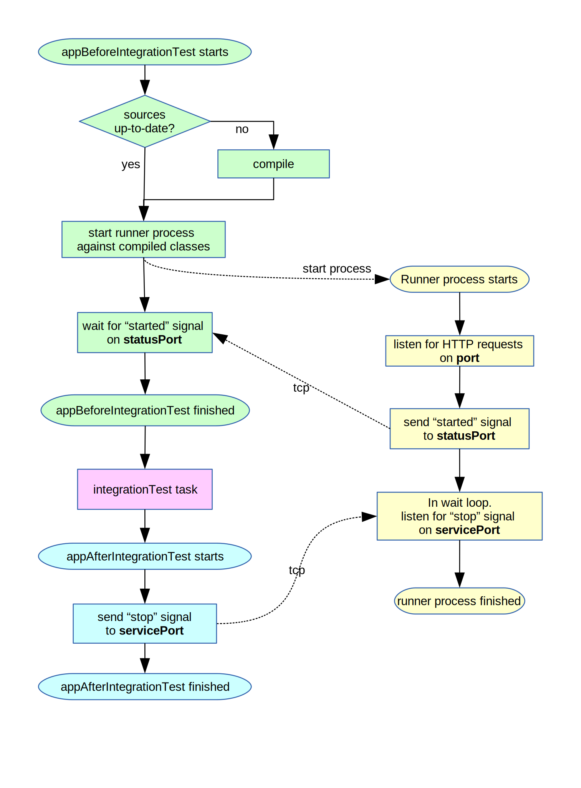

gretty {
// ...
integrationTestTask = 'integrationTest' // name of existing gradle task
// ...
}Integration tests support
Syntax
Effects
When you run gradle integrationTest from command-line, Gretty starts servlet-container before integrationTest task and stops it after.
|
Note
|
Gretty does not define integration test task nor does it augment it in any way. All it does is start and stop servlet-container. |
Tunneling properties to test code
When your integration task supports JavaForkOptions interface (for example, when integration task is instance of Test class), Gretty passes the following system properties to the java process of integration task:
| Property | Content/Purpose |
|---|---|
gretty.contextPath |
The context path of the current web-app project |
gretty.httpPort |
Currently used HTTP port, when HTTP protocol is enabled; null otherwise. |
gretty.port |
same as httpPort |
gretty.httpBaseURI |
|
gretty.baseURI |
same as gretty.httpBaseURI |
gretty.httpsPort |
Currently used HTTPS port, when HTTPS protocol is enabled; null otherwise. |
gretty.httpsBaseURI |
|
Your test code can access these properties via System.getProperty function. This allows to parametrize test code with Gretty-specific parameters.
Workflow

See also: appBeforeIntegrationTest task and appAfterIntegrationTest task.